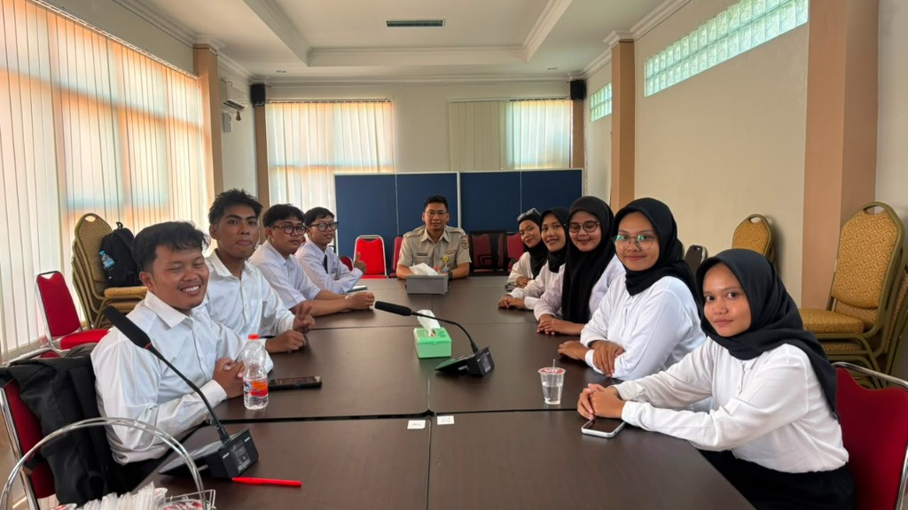
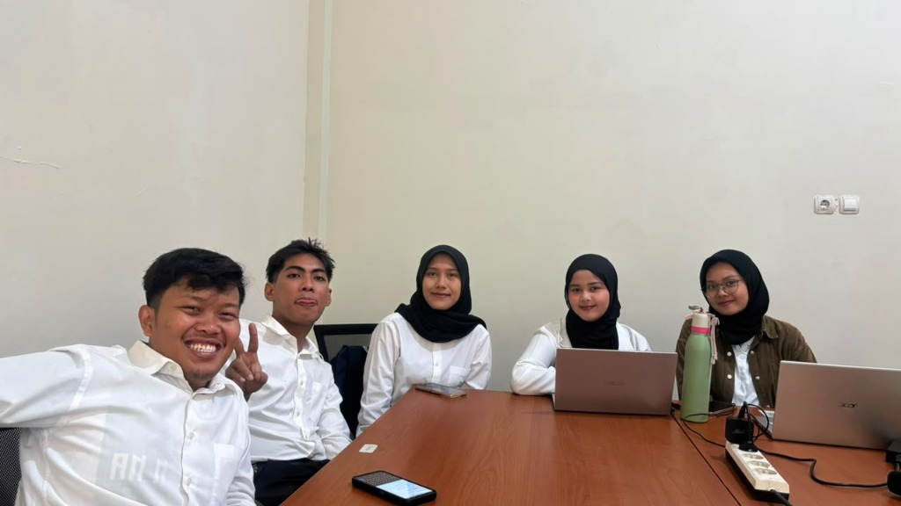
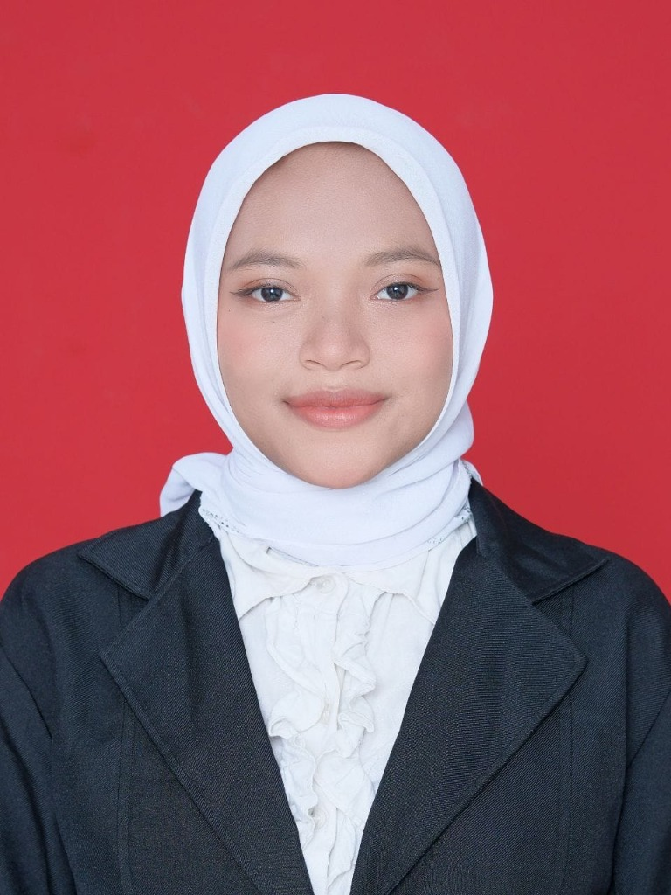
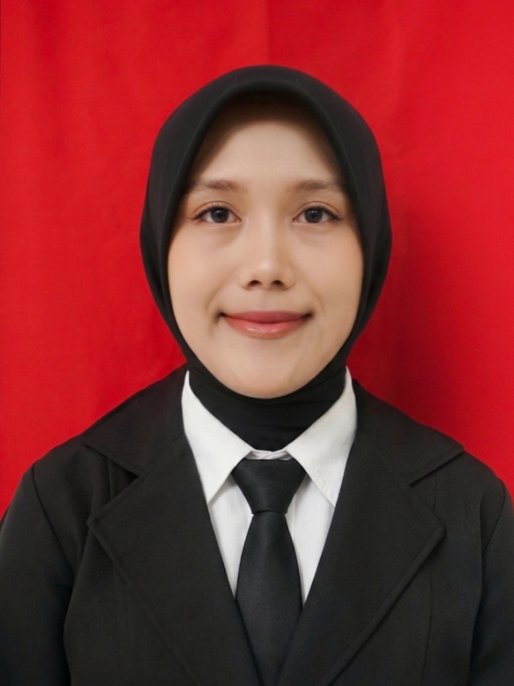
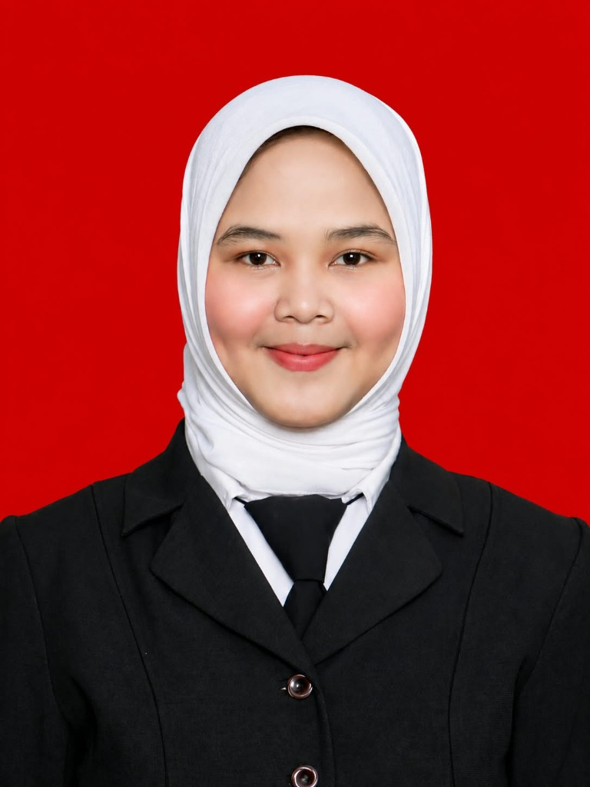
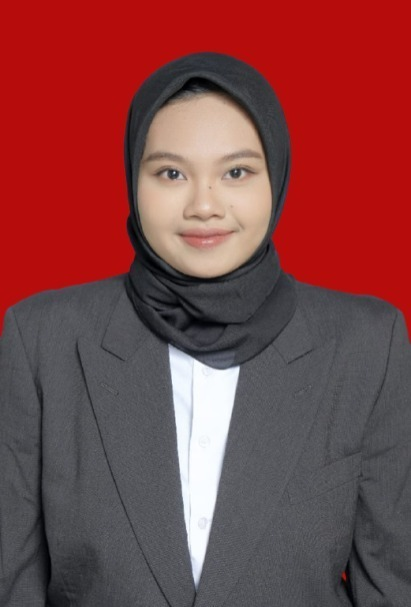

Membangun pengalaman, mengembangkan keterampilan, dan berkontribusi dalam pemetaan serta survei lapangan secara profesional.
Pelajari Lebih LanjutKami adalah peserta magang di Hub ATR/BPN Banjar yang berdedikasi tinggi untuk mempelajari dan mengaplikasikan teori akademik ke dalam praktik nyata di lapangan.
Berfokus pada pengelolaan dokumen pertanahan, verifikasi data yuridis, dan pelayanan administrasi pertanahan untuk memastikan tertib hukum dan kepastian hak atas tanah bagi masyarakat.
Mempelajari penggunaan alat-alat survei terkini, analisis data spasial, hingga pembuatan peta digital yang akurat untuk mendukung pemetaan dan perencanaan wilayah yang presisi.
Penataan dan pengelolaan dokumen fisik maupun digital untuk kemudahan akses dan keamanan arsip negara.
Pemeriksaan dan validasi kesesuaian data hukum pertanahan berdasarkan undang-undang yang berlaku.
Pengambilan data lapangan menggunakan instrumen pengukur presisi tinggi untuk batas kepemilikan lahan.
Digitalisasi dan pengolahan hasil survei menjadi peta pendaftaran dan peta tematik melalui perangkat lunak pemetaan.
Dokumentasi kegiatan dan rutinitas kami selama magang.

Kegiatan pengarahan dan pengenalan lingkungan kerja di kantor ATR/BPN Banjar bersama seluruh rekan magang dan pembimbing. Melalui kegiatan ini, kami mempelajari struktur organisasi dan pembagian tugas masing-masing divisi.

Aktivitas di hari kedua magang, berkumpul dan berdiskusi bersama teman-teman divisi Tenaga Teknis Survei Pemetaan. Semangat baru untuk mempelajari teknis lapangan!

Tenaga Administrasi
Tenaga Administrasi
Tenaga Administrasi
Tenaga Administrasi

Tenaga Teknis Survei Pemetaan
Tenaga Teknis Survei Pemetaan
Tenaga Teknis Survei Pemetaan

Tenaga Teknis Survei Pemetaan

Tenaga Teknis Survei Pemetaan